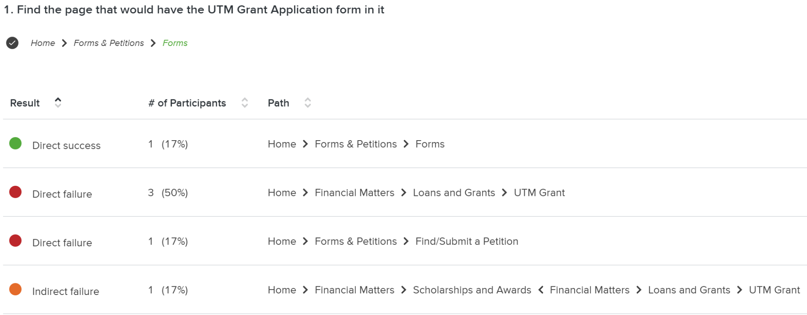

Improving the UTM Registrar Website Through IA, Labeling, and Search Redesign
Project Background
I worked on evaluating and enhancing the UTM Office of the Registrar website. Our objective was to apply HCI methodologies to improve user experience through structural reorganization, user testing, and iterative design. The project lasted four weeks and consisted of multiple deliverables, including an IA audit, card sort, tree test, and a mid-fidelity prototype.
The Problem
The UTM Registrar website is a critical platform where students complete time-sensitive tasks such as registering for classes, accessing transcripts, and navigating financial forms. However, many students reported abandoning the site entirely in favor of Google due to frustrations with its layout. A detailed audit revealed the following core problems:
Over-nested navigation: Multiple layers of menus created decision fatigue and made resources difficult to locate quickly.
Ambiguous or misleading labels: Categories such as "Petitions" or "Deregulated Fees" were not intuitive to the average undergraduate user.
Unhelpful search functionality: The site defaulted to a global UofT-wide search, returning irrelevant results instead of site-specific content.
Inconsistent visual hierarchy: Important content was buried or presented in dense blocks of text with little scannability.
Research & Tree Testing Insights
Our primary evaluative method was a 7-task tree test administered to six student participants. The tree test simulated the site's current information structure without any visual interface, allowing us to measure the effectiveness of the labeling and hierarchy alone. Key findings included:
Task success rates varied significantly: Only 1 of 6 participants located the UTM Grant Application correctly (17%), while all participants succeeded in locating refund and staff application pages (100%).
Common misroutes: Participants frequently confused "Forms" with "Petitions," highlighting the lack of semantic distinction between them.
User feedback: Post-test interviews revealed students often guessed based on label familiarity rather than actual understanding.
These insights emphasized the need to streamline categories, create mutually exclusive groupings, and rewrite labels to reflect students’ mental models.

Information Architecture Overhaul
To reimagine the IA, we conducted an open card sort with participants to see how they would group and label 25+ topics commonly found on the Registrar site. From these results, we implemented the following improvements:
New categories: Introduced "Tools" (e.g., Academic Calendar, GPA Calculator) and "Petitions & Forms" to consolidate overlapping terms.
Simplified nesting: Reduced menu depth to two levels to support quick scanning and reduce user effort.
Reorganized financial content: All tuition, refunds, and payment links were unified under "Financial Matters."
Before: Overly complex, unclear IA
After: Streamlined, student-centered structure
Labeling Strategy & Microcopy
Language was the most significant barrier to navigation. Students didn’t understand academic jargon or category logic. Our solution included:
Descriptive labeling: Changed "Final Grades" to "GPA & UofT Grading Scheme," which better reflected content.
Action-oriented phrasing: Rewrote static labels like "Absence Declaration" to the clearer "Declare Absence from Courses."
Clarifying context: Added one-line descriptions and optional tooltips under each subpage title for first-time users.
This resulted in increased comprehension during follow-up testing and reduced misclick rates during exploratory navigation tasks.
User/Task Flows
Using Balsamiq, we prototyped the top 3 student journeys: registration, financial aid, and submitting petitions. We focused on two for mid-fidelity testing:
Flow 1: Register for Summer Courses via "Registration & Courses" → "Register for Summer Courses"
Flow 2: Locate the UTM Grant Application via "Financial Matters" → "Loans & Grants" → "UTM Grant Application"
Our prototype also embedded a scoped search bar on each subpage to help reduce page scanning friction and added a "Jump to" dropdown menu for dense content pages.
Outcomes & Reflections
Our redesign produced measurable improvements in both task efficiency and user satisfaction:
Task success: Navigation accuracy improved by 40–60% compared to baseline
Confidence: Users felt more assured choosing categories based on clearer labels
Clarity: Testing confirmed that new groupings and terminology reflected real user expectations
This project demonstrated how small changes—like rewording a label or adjusting menu logic—can have outsized impacts on user success. It reinforced the power of participatory design, iterative testing, and plain language in complex digital systems.